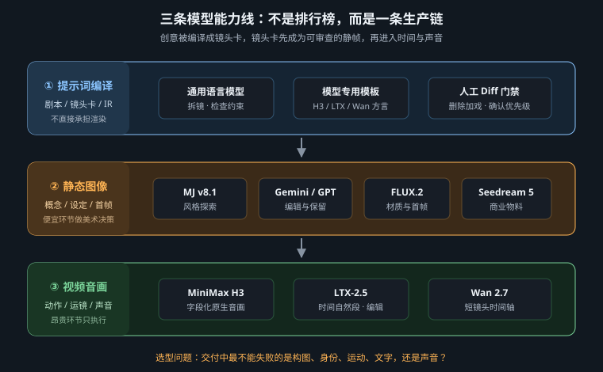
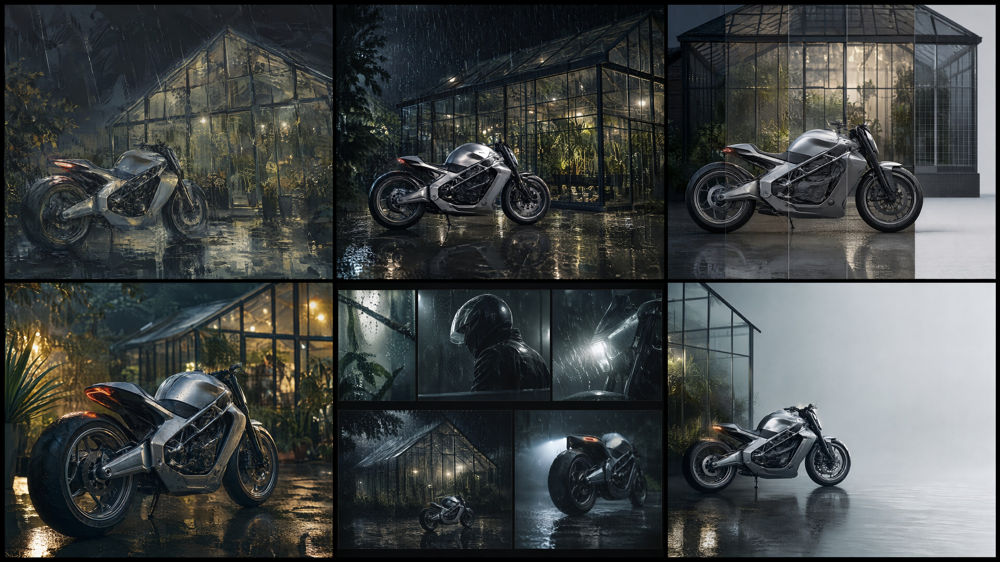

这本书不再只讲静态生图：先分清图像、视频音画与提示词编译，再选择模型方言
模型版本、网页控件、API 字段与开放权重会持续滚动。本章只把官方文档能确认的能力写成事实；第三方平台名称、速度、显存和默认参数一律标明来源，不把一次本地测试伪装成普遍规律。做项目时应再次打开本章末尾的官方链接核对。
本书前 22 章以静态图像为主，因为光、材质、构图和艺术流派必须先在一帧里成立；动态图像并不会废除这些规则，只是再加上时间、运动、镜间一致性与声音。合并版从第 23 章开始进入动态叙事、视频生成、后期和完整 CG 项目。因此，模型不应再排成一张“谁最好”的榜单，而要分成三条生产线。
| 能力线 | 主要产物 | 最难约束 | 本书位置 |
|---|---|---|---|
| 静态图像生成 / 编辑 | 概念图、角色设定、海报、镜头首帧 | 构图、材质、文字、身份和局部保留 | 第 1–22 章 |
| 视频 / 原生音画生成 | 单镜头、连续动作、带对白或环境声的视频 | 时间顺序、运动因果、帧间与跨镜一致性、音画同步 | 第 23–38 章 |
| 提示词编译与前期辅助 | 剧本拆镜、镜头卡、模型专用 prompt | 不擅自加戏、字段正确、约束优先级和可审查性 | 第 24、25、30、38 章 |

一个语言模型可以把中文创意编译成 H3 或 LTX-2.5 的规范提示词，却不一定直接生成最终画面；反过来，视频模型内置的文本编码器也不等于通用聊天模型。生产管线必须分别记录：谁做创意拆解、谁做图像首帧、谁让画面运动、谁负责声音。

| 模型 / 路线 | 最顺手的方言 | 强项 | 常见翻车机制 |
|---|---|---|---|
| Midjourney v8.1 | 高信息密度视觉短语 + 风格/角色参考 + 尾部参数 | 风格探索、情绪板、系列视觉 | 形容词被平均；参考权重过高时题材渗入 |
| Nano Banana Pro （Gemini 3 Pro Image） | 完整任务说明：创建或编辑、必须保留、允许改变、验收条件 | 多轮改图、多参考图关系、图文理解 | 写成标签袋后，模型不知道约束优先级 |
| FLUX.2 Pro | 连续的摄影 / 设计描述，明确空间与物理关系 | 写实材质、光学语言、结构控制 | 技术词互相冲突时，会生成“术语华丽但物理不通”的图 |
| Seedream 5 | 中文商业简报：主体、卖点、版式、交付规格 | 电商、海报、本土语义、成套资产 | 氛围与排版同时要求，却没有说明谁优先 |
| GPT Image 2 | 分层创意简报；编辑时逐项列出不变项 | 指令遵循、局部编辑、带字视觉 | 要求太多而无主次，装饰侵蚀主体 |
| 图像模型作为视频首帧 | 中性设定图或镜头生产卡：构图、人物、环境、光、用途全部锁定 | 用便宜的一帧替视频模型承担昂贵的美术决策 | 首帧写得过于戏剧化，后续动作没有可用空间 |
静态模型的共同原则是：先固定物理层和用途层，再翻译风格层。换模型时保留决策，不要逐词搬运。MJ 的短语块应改写成 Gemini/GPT Image 可验收的完整句；自然语言简报若搬回 MJ，则应压缩成视觉块并把参考控制放到尾部。
Create a vertical luxury skincare key visual for a 4:5 social placement. Place exactly one unlabeled frosted-glass serum bottle on a pale travertine plinth, centered slightly below the optical middle. Use a large 5200K softbox 45 degrees camera-left and a narrow 3400K rim light. Preserve realistic transmission in the glass and fine pores in the stone. Keep the upper 30% quiet and low-contrast for copy. Do not add text, logos, flowers, water splashes, or a second product. The result must read as restrained editorial still life, not a glossy CGI render.
可验收点：对象只有一件；主、轮廓光方向可复查；玻璃和石材由不同光学行为区分；上方留白是用途条件；排除项只删除会改变广告类型的对象。
MiniMax 官方在 2026 年 7 月 31 日发布的 H3 页面把它描述为通用多模态生成模型：文本、图片、视频和音频可以成为上下文，目标输出可覆盖图像、视频、音频以及同步音画。官方页面给出的上限包括最长约 15 秒和原生 2K 视频，但这些属于模型/服务能力声明，不应被误写成每个本地节点、每个地区入口都固定提供的按钮。
H3 的提示词方言不是“电影感 + 运镜词”的逗号串，而是把画面时间线、同期声和配乐分开。对带首帧的 I2VA，先声明图片与 0 秒对齐；随后使用三个核心字段：
For the target video, at 0.00 seconds into the target video, <Picture 1> (from [Shot 1]) is fully referenced. integrated_multimodal_description: [Shot 1] Live-action, cinematic, a medium-wide shot preserves the woman, her blue coat, the wet station platform and the train position shown in <Picture 1>. The camera trucks right with small amplitude at slow speed as she lifts her gaze. At 00:04.000, the camera cuts to a close-up while she says: <d>[Chinese] 我们到了。</d> overall_soundscape: Rain taps the metal canopy above a low train-idle hum. Her coat rustles as she turns; the announcement remains distant and muffled. non_diegetic_music: Sparse piano notes at a slow tempo; low strings enter after the cut and remain below the dialogue.
| 字段 | 只负责什么 | 验收问题 |
|---|---|---|
integrated_multimodal_description | 可见画面、动作、切镜、对白与戏内声音 | 每句话是否能在时间线上看见或听见？ |
overall_soundscape | 跨全片的环境声与物理动作声 | 声音是否有来源，是否误把配乐写进环境？ |
non_diegetic_music | 角色听不到、观众能听到的配乐 | 是否写了乐器、速度和动态，而非只写“悲伤”？ |
H3 的参考模式还可以用 <Subject N>、<Picture N>、<Video N> 与 <Audio N> 分别指认身份、关键帧、时间结构和音轨。标签一旦分配就必须跨字段保持同义；这相当于把“像参考图”改写成可审查的资产关系。第 30 章会给完整六段式、首尾帧与全参考案例。
旧教程中的某个量化权重、采样步数、帧数公式和单卡耗时只能说明当时的节点组合。合并版将这些内容放进“工作站实测记录”，不再把它们写成 H3 模型本身的固定能力。
Lightricks 官方 LTX-2 仓库当前把 LTX-2.5列为推荐版本，并将 LTX-2.3 标作旧版。仓库提供 22B full/dev 与 distilled 路线，支持文生视频、图生视频、视频生视频、音频驱动视频、关键帧插值、局部重做、配音与 HDR 变换等工作流。2.5 与 2.3 的 checkpoint / LoRA 不兼容，因此“把文件名里的 2.3 改成 2.5”不是升级。
LTX-2.5 官方提示建议与 H3 的显式字段不同：写成不超过约 200 词、按发生顺序推进的一段自然语言，从主动作直接开始，把主体、运动、外观、环境、相机、光线、颜色与场景变化写成连续因果。字段化 JSON 可以留在管线里管理镜头卡，但送入模型前应编译成自然段。
A woman in a cobalt raincoat waits alone on a wet railway platform at night. She hears the approaching train, raises her head, and takes one slow step toward the yellow safety line while the camera tracks right beside her at walking speed. Rain falls diagonally in a steady crosswind; reflections stretch across the dark concrete without changing the platform geometry. A white headlight grows behind her, briefly outlining the coat and umbrella. The camera settles into a medium three-quarter view as the train stops. Keep her face, coat seams, umbrella shape, platform columns, and screen direction consistent. Synchronized audio: rain on metal roofing, distant rail vibration growing into brake squeal, no music.
为什么这样写：动作只有“抬头—迈步—停下”一条主链；跟拍速度与人物步速绑定；白色头灯的增强有时间原因；不变项逐项列出；声音随列车距离变化。若把它改成镜头术语列表，时间关系会消失。
Wan 2.7 在不同聚合平台可能以不同的模型或产品版本名出现，具体输入类型、时长、帧率和负面字段以当前入口为准。本书保留它，是因为“初始状态 → 唯一主动作 → 唯一主运镜 → 结束状态”的写法具有稳定的模型无关价值。
A six-second product film, 16:9. At 0–2 seconds, a matte black wristwatch rests on dark slate under one narrow 4300K top light; only the second hand moves. At 2–5 seconds, the camera makes one slow 30-degree clockwise orbit while a soft rim light reveals the brushed steel crown. At 5–6 seconds, the camera settles into a three-quarter hero view and holds. Keep the watch geometry and dial markings stable. No zoom, extra rotation, floating particles, or text overlay.
这段提示词可以跨平台迁移，因为它没有假造 API 控件；真正提交时再把 6 秒、画幅、帧率和输入图放入平台字段。正文只负责讲清时间因果，参数面板负责传递机器可验证的规格。
当一部 60 秒影片有十几个镜头时，人手反复填 H3 三段式或 LTX 自然段很容易漏项。更稳妥的管线是：先把创意写成结构化镜头卡，再由语言模型按目标模型规范编译，最后做人工 diff。
{
"shot_id": "S07",
"duration_s": 6,
"visual_anchor": "approved_frame_S07.png",
"subject_lock": ["captain_face", "crimson_uniform", "bridge_layout"],
"action": "eyes widen; restrained smile forms",
"camera": "slow push in, small amplitude",
"light_change": "blue planet light rises from camera right",
"sound": ["engine hum", "soft notification chime"],
"music": "low strings enter after 4 seconds"
}
JSON 是项目的中间表示，不是模型的“高级提示词”。编译到 H3 时，把内容分别放入画面、声景、配乐字段；编译到 LTX-2.5 时，按时间顺序写成一个自然段；编译到 Wan 时，压缩为一个主动作和一个主运镜。编译器只能补格式，不能擅自增加飞鸟、雾、霓虹或剧情转折。
| 首要任务 | 优先路线 | 首要控制 | 换路线的信号 |
|---|---|---|---|
| 快速探索高完成度静态风格 | MJ v8.1 | 风格参考、画幅、变化范围 | 需要精确文字或局部保留 |
| 多参考图编辑与严格保留 | Nano Banana Pro / GPT Image 2 | 保留项、修改项、验收项 | 需要极端风格发散或时间运动 |
| 写实首帧与材质验证 | FLUX.2 Pro | 光源、镜头、表面响应 | 需要复杂文字排版或连续音画 |
| 带对白、声景和配乐的多模态镜头 | MiniMax H3 | 参考标签、画面时间线、声景和配乐字段 | 只需要无声短镜或现有视频重绘 |
| 开放工作流、关键帧与同步音画编辑 | LTX-2.5 | 按时间推进的自然段、参考关系、版本兼容 | 显存/部署预算不匹配或平台未提供对应模式 |
| 短镜头动作与运镜 | Wan 2.7 | 初始—动作—轨迹—结束状态 | 需要复杂原生声音或多参考编辑 |
| 批量生产模型专用 prompt | 独立语言模型 + 模板 | 官方规范、禁止加戏、人工 diff | 镜头是高潮或含关键表演，应人工逐字写 |
最终原则没有变：按交付中最不能失败的约束选模型，而不是按首页样片最好看选模型。先写下不能失败的三件事——例如角色身份、标题可读、镜头轨迹或对白同步——再选择原生支持这些条件的模型。参数只能放大模型已有的控制能力，不能把一种方言强行改造成另一种。
MiniMax H3 官方发布说明 · MiniMax 视频生成 API · LTX-2 / LTX-2.5 官方仓库。第三方平台的模型名和参数必须以实际调用当日的能力说明为准。